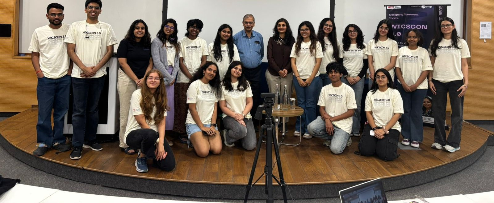
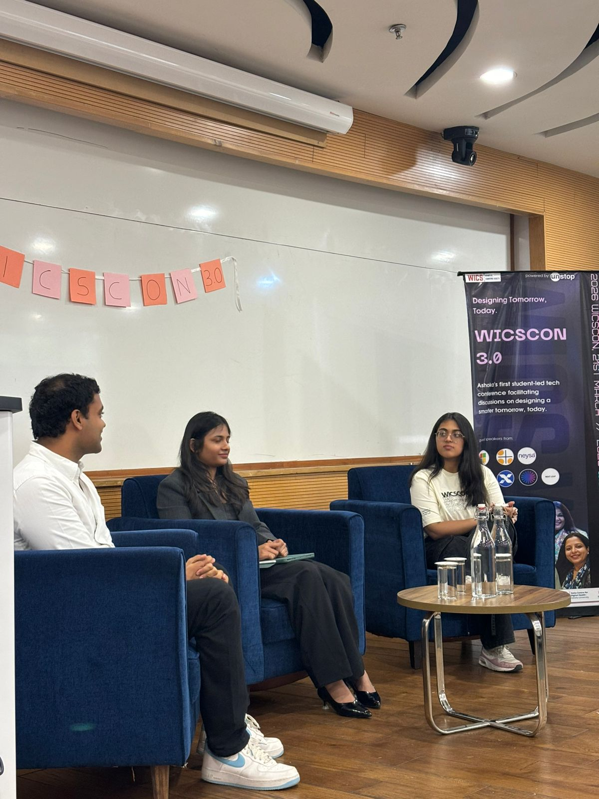
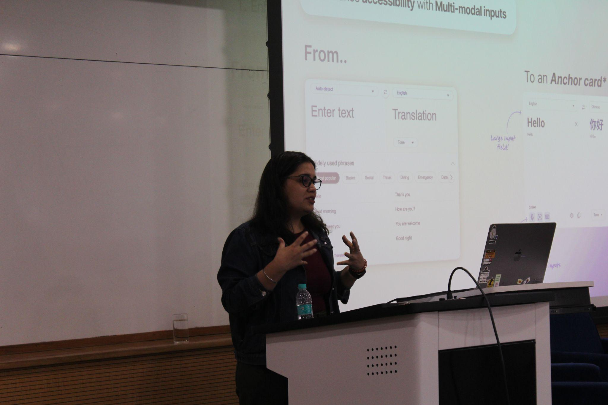
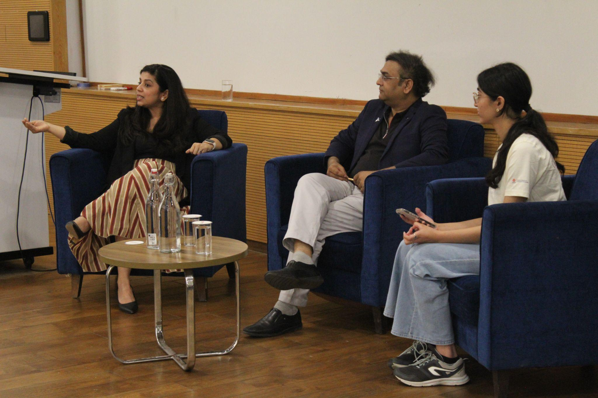
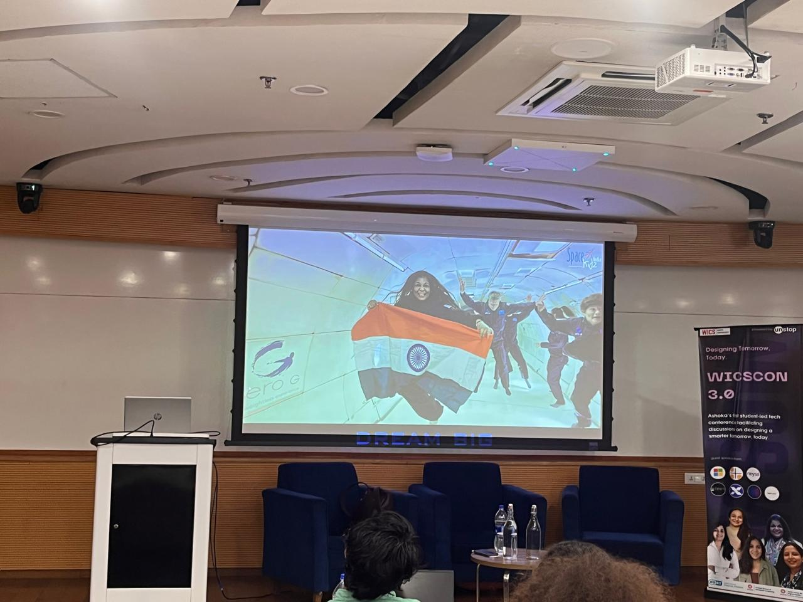
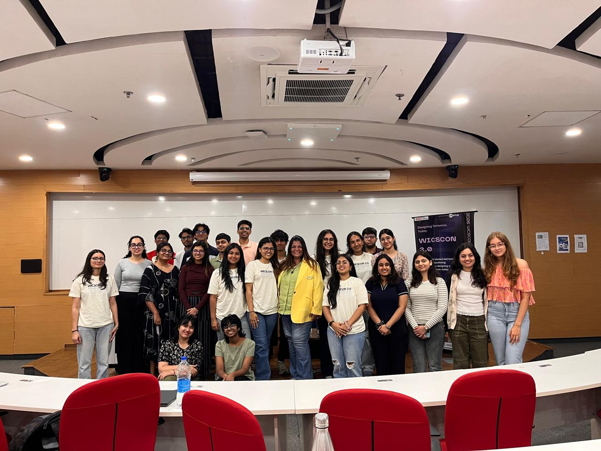
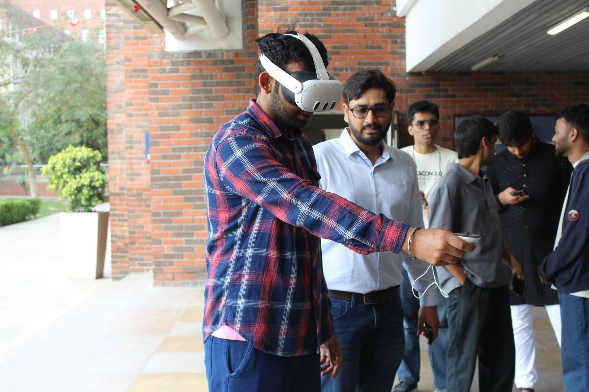
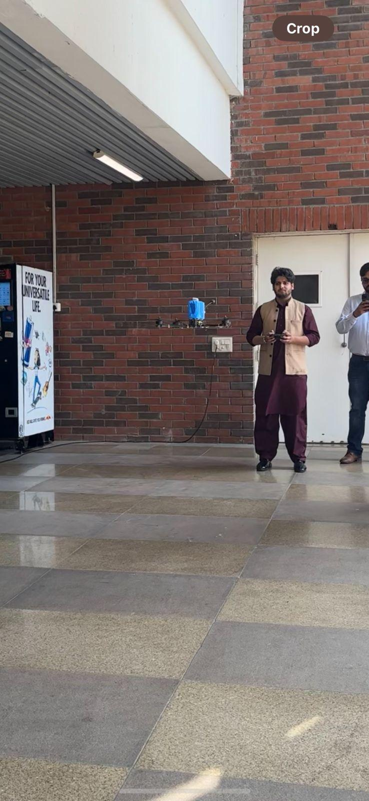
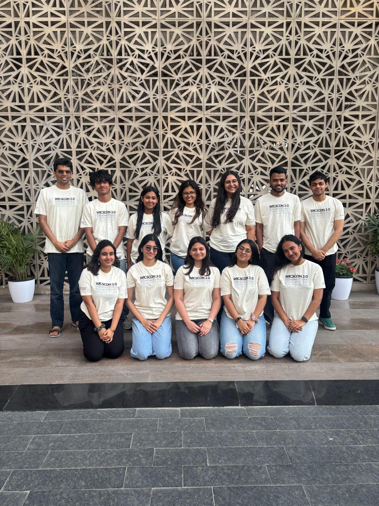

WiCSCon 3.0: Designing Tomorrow, Today
India's first student-led tech conference on inclusivity in CS, back at Ashoka for its third year.
WiCSCon is India's first student-led conference on inclusivity and diversity in computer science, run by the Women in Computing Society (WiCS) at Ashoka University. On March 21 and 22, its third edition took place under the theme "Designing Tomorrow, Today," drawing 440 sign-ups and a programme that went well beyond computer science.
The two days included keynotes, panels, a research fireside chat, three competitions, and a Technology Showcase with VR headsets and drones. Speakers came from Microsoft AI, Evolve AI, Neysa AI, Avtara Tech, Zykrr, NextLeap, Amuse Labs, Delhi University, Taif University (Saudi Arabia), and Space Kidz India. The talks covered AI product design, computational biology, space science, and career strategy.
Day 1: Competitions and Conversations
The first day belonged to the competitive tracks and a series of talks that drew over 40 attendees from across academic disciplines.
Panel: From Hype to Use Cases — Where Is AI Actually Delivering Value Today?
Rahul Gupta (Founder, Evolve AI) and Soumya Aggarwal (Research & Education, Neysa AI) discussed where AI is delivering real value today versus where it's still catching up to the hype.

Keynote: Is Designing the Art of Optimization?
Simran Singh, Product Head II at Microsoft AI's Design division, gave a keynote asking whether design is fundamentally an act of optimization.

Panel: 0 to 1 and Beyond — Turning Ideas into Scalable Tech Products
Amit Singh (Founder, Avtara Tech) and Mallika Sharma (Product Head, Zykrr) discussed the process of turning early-stage ideas into scalable tech products.
Workshop: Design Your Life — Making the Most of Your Liberal Arts Degree
Kanika Singhal, Founding Managing Director of NextLeap, ran an interactive workshop helping liberal arts students think through career design and making the most of their degrees.
Closing Keynote: Engineer to Entrepreneur — Building with Technology and Vision
Jaya Hangal, CTO of Amuse Labs, closed Day 1 with a talk on her path from engineer to entrepreneur, and what it takes to build with technology and vision.

The Three Competitions
Three competitive tracks ran alongside the talks, all hosted through Unstop. After eliminative rounds, approximately 50 to 60 external participants made it to the final stage on campus.
HackHERthon
A two-round hackathon focused on technology-driven solutions for women's health, safety, and wellbeing. After an online submission round (prototype, demo video, and solution PDF), selected teams were invited to code on campus. Some teams participated online to accommodate those who could not travel. 26 participants made it to Round 2. The offline winner built a physical safety signal detection bracelet; the online round saw a tie between two teams, both working on AI voice agents for PCOD awareness and cycle tracking. Judges included Rahul Gupta (Evolve AI) and Dr. Mayank Garg and Dr. Suvrankar Datta from KCDHA.
AI Protocol: Mini-MUN
A collaboration with Ashoka's MUN Club, this was a fast-paced crisis simulation about AI governance. Seven participants took on roles ranging from Sam Altman to Greta Thunberg, debating AI's impact on information, governance, and jobs through opening statements, resolution deliberation, and closing arguments. Judged by the MUN Club's Executive Board.
AI Blueprint: Policy Case Competition
A consulting-style challenge where 18 participants designed education policies for integrating AI into academic systems. The scenarios were deliberately thorny: essay grading, coding assignment evaluation, false positives in AI detection tools. The point was not to restrict AI but to figure out how it could become a genuine pedagogical tool. Judged by Kanika Singhal (NextLeap), with prizes for the top three teams.
Day 2: Research, Space, and What Comes Next
Research Fireside Chat: Computing the Future of Biology
Day 2 opened with a fireside chat: "Computing the Future of Biology." Prof. Manisha Goel (Delhi University) and Dr. Farah Anjum (Taif University, Saudi Arabia) talked about their work in computational medicine and what it's like to be a woman building a research career in these fields.

Keynote: From Classroom to Cosmos
Dr. Srimathy Kesan, Founder and CEO of Space Kidz India Mission, closed the conference with a keynote titled "From Classroom to Cosmos: How Women Are Rewriting the Code of Space."


Beyond the Talks
A first for Ashoka: attendees could try Meta Quest VR headsets and fly drones at a Technology Showcase set up alongside the main conference. There was also a vendor row with Uncle Peter's Pancakes, a tiramisu stall, matcha mithai, and students selling handmade stickers and posters.


